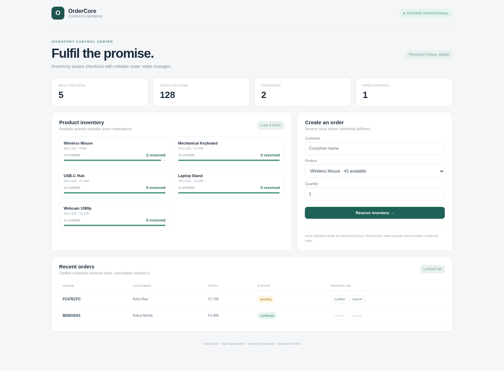

01 / BACKEND SYSTEMSCOMMERCE · INVENTORY01
OrderCore
A commerce backend built around safe checkout and inventory operations. Orders reserve stock atomically, handle retries through idempotency keys, and release reservations on cancellation.
Node.jsSQLiteREST APITransactions
- Atomic inventory reservation and rollback behaviour.
- Idempotent checkout prevents duplicate order creation.
- Lifecycle tests cover confirmation, cancellation, and overselling.